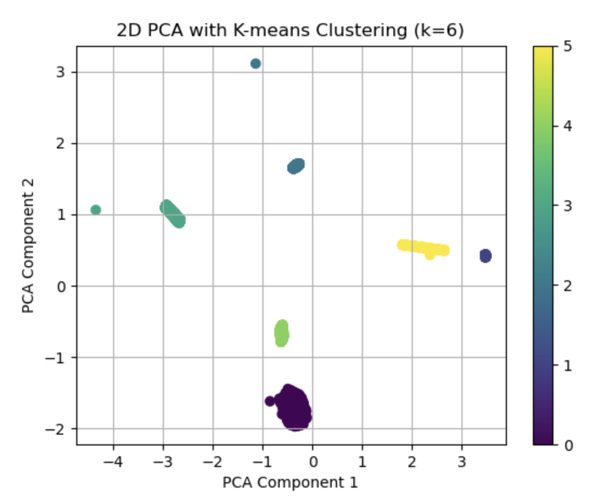
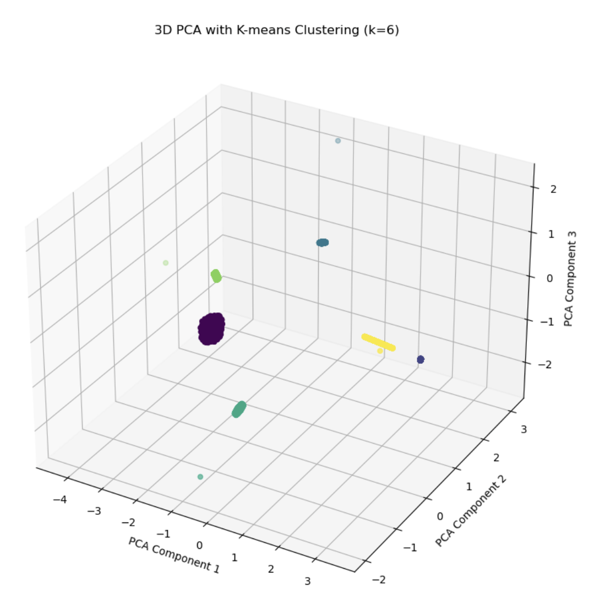
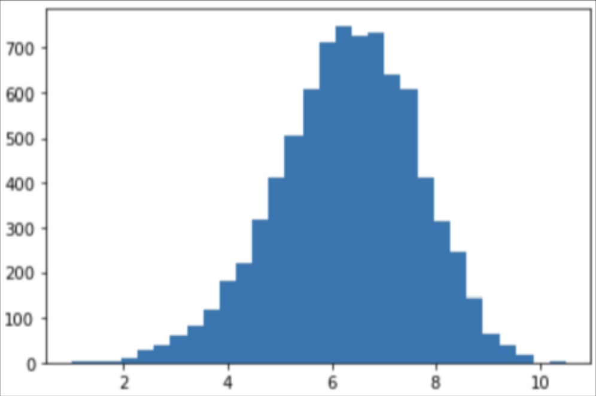
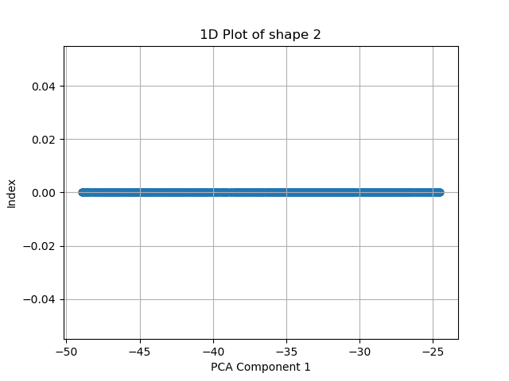
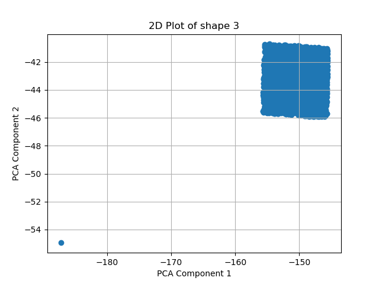
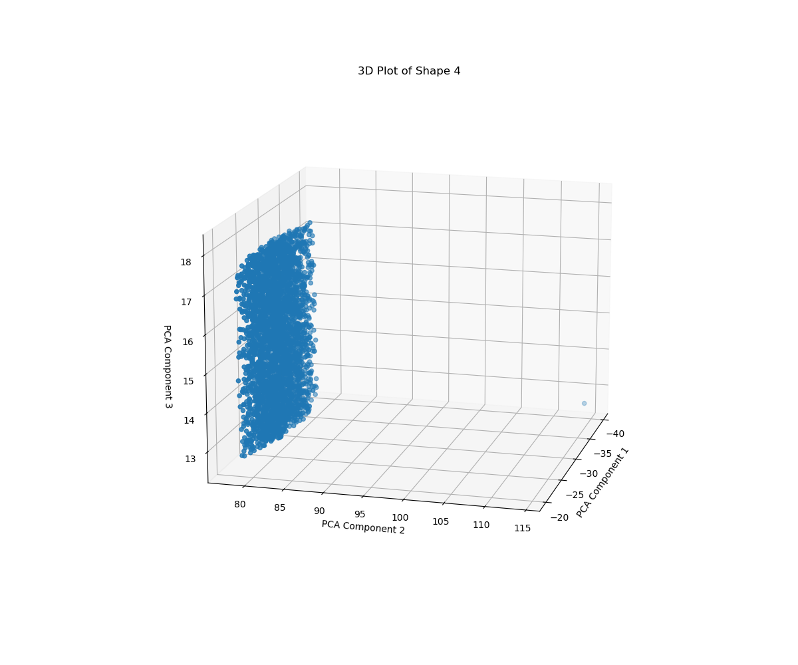
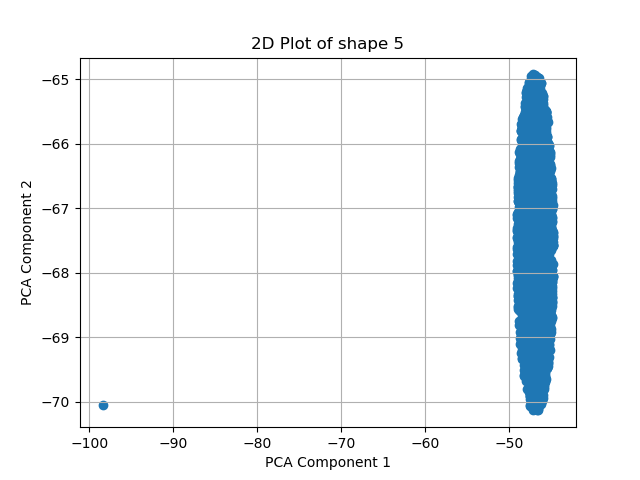

6 min read.
The goal of this project was to identify all the shapes hidden in a dataset that lived entirely in six dimensions. Sounds cute until you realize you can't visualize anything above 4D, and the shapes are also in different dimensions. So how do you find shapes you literally cannot see? Let's go over that step-by-step.
My first step was to run K-Means on the raw 6D data to try and segment out any shapes or patterns. Since each shape is just a set of points grouped together, clustering was the obvious place to start. After a lot of playing with the K value and visual sanity checks, I landed on K = 6, meaning I had six distinct shapes hiding in this space.


Next, I went for the usual "visualize it with PCA" approach — both in 2D and 3D. But this ended up being a huge reality check. PCA is not just a visualization tool. It's linear, so expecting it to cleanly compress 6D data into 2D or 3D without distortion? Kinda impossible. That said, I still used it — just differently. Instead of PCA'ing the whole dataset at once, I ran PCA on each cluster individually, and more importantly, I paid attention to the Explained Variance Ratios. That's where the magic happened.
This one had almost equal variance across all 6 principal components, and the standard deviation on each axis was nearly identical. I couldn't prove it was a 6D sphere (or cube), but based on the evidence, I'm calling it a 6D Sphere.

Super clean — the variance was only significant along the first principal component, and all the points were aligned negatively. A straight line in 6D, basically.

This shape had variance concentrated in PC1 and PC2, and not much beyond that. Plotting it confirmed it — the shape was flat and wide, aligned with the X-axis.

Now we're getting deeper. This one had significant variance across three principal components, and the height was around 6 units. It didn't seem tilted either — likely aligned with the X-axis.

This shape looked like an ellipse, but PC3 contributed about 22% of its variance — meaning it was likely tilted into the third dimension. I still classified it as a 2D object though, since it had almost no depth beyond that.

This one gave me headaches. It looked like lines were radiating from a center point — kinda like an asterisk. It had just enough contribution from PC6 (~4%) that I believe it was a 5D object tilted in 6D.
Six shapes, six dimensions, and zero ability to actually see any of them — and yet, we found them all. Not bad for a dataset that refused to be visualized!